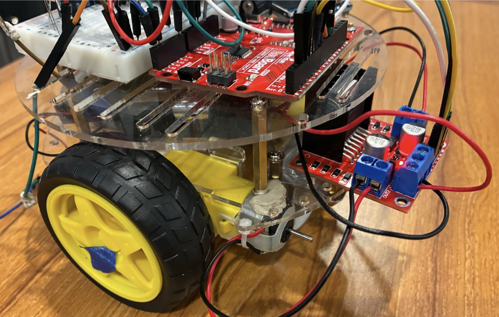
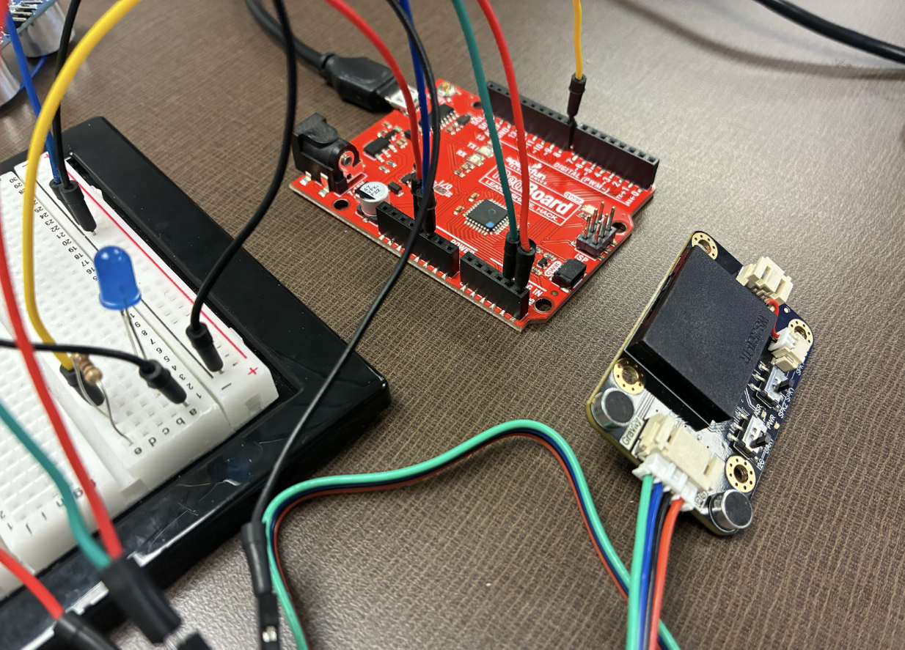
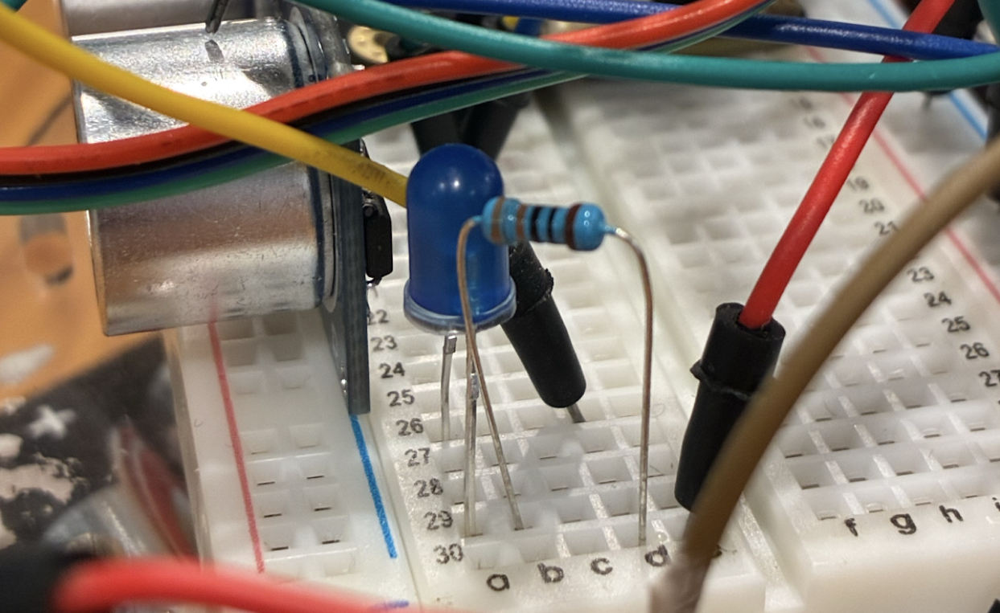
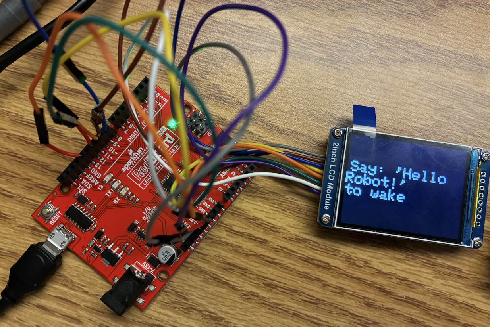

Arduino Voice-Controlled Car
MEMS 2000 • Team Engineering Project

Project Overview
As part of a six-person engineering team, I helped design and build an Arduino-based vehicle capable of responding to spoken voice commands. The project integrated mechanical assembly, embedded programming, and electronic hardware into a single functional prototype capable of navigation, obstacle detection, and real-time user feedback.
My Contributions
As a member of a six-person engineering team, my primary responsibilities included the mechanical assembly of the vehicle, integration of electronic components, and testing and debugging the interaction between the Arduino control code and the vehicle's mechanical systems. I also contributed to the preparation of the final engineering lab report by documenting the design process, testing procedures, and project results.
System Components
- Arduino Uno – Controlled the vehicle and coordinated all electronic components.
- Voice Recognition Module – Allowed the vehicle to respond to programmed voice commands.
- Ultrasonic Sensor – Detected nearby objects and measured distance.
- LCD Display – Displayed real-time distance information and system feedback.
- DC Motors – Powered vehicle movement and directional control.
- LED Indicator – Displayed the vehicle's parked status.
Development Process

The motor driver board connected the Arduino Uno to the DC motors, allowing software commands to control the vehicle's movement and speed.

Electronic components were connected using a breadboard, jumper wires, and dedicated power supplies to create a fully integrated system.

The LCD display provided real-time feedback, including obstacle distance measurements and system status.

Individual components were tested before final integration to verify reliable communication between hardware and software.
Development Highlights
Motor Driver Integration
Two DC motors were mounted to the chassis and connected to a motor driver board, allowing the Arduino Uno to control forward, reverse, and turning movements. This created the interface between the programmed voice commands and the vehicle's physical motion.
Circuit Assembly
The vehicle combined a voice recognition module, ultrasonic sensor, LCD display, LED indicator, and motor driver using a breadboard and jumper wires. Careful wiring and power management were required to ensure every component operated simultaneously without electrical issues.
Programming & Testing
Arduino libraries were used to control the LCD display and voice recognition module. Extensive testing and debugging ensured that spoken commands correctly triggered vehicle movement while sensor data was displayed accurately on the LCD.
Final Prototype
The completed prototype successfully responded to voice commands, detected nearby obstacles using an ultrasonic sensor, displayed real-time distance information, and demonstrated the integration of mechanical assembly, electronics, and embedded programming into a functional engineering system.
Engineering Challenges
Integrating multiple electronic systems into a single platform required extensive troubleshooting. The team resolved power distribution issues, refined wiring connections, and compensated for motor inconsistencies to improve driving performance. Iterative testing verified that the voice recognition module, ultrasonic sensor, LCD display, and motor control functioned reliably together.
Technical Skills Demonstrated
Project Takeaways
This project strengthened my understanding of embedded systems, electromechanical design, and collaborative engineering. Designing, assembling, and testing a multi-component Arduino platform provided valuable experience integrating mechanical hardware with electronic systems while reinforcing the importance of iterative testing and systematic troubleshooting.